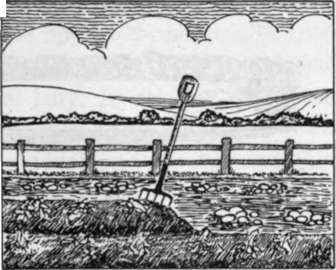
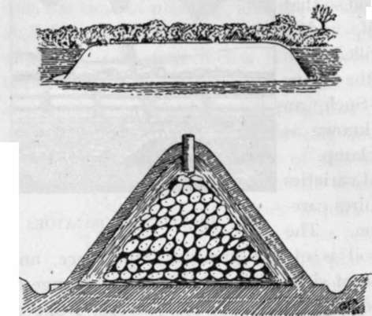

Diseases And Their Remedies Of Potatoes
Description
This section is from the book "School Gardening", by W. Francis Rankine. Also available from Amazon: School Gardening.
Diseases And Their Remedies Of Potatoes
The diseases that attack the Potato are mainly fungoid in character, yet much damage can be wrought in the Potato plot by the Wireworm. However, the treatment of insect pests is a very different matter from the eradication of fungoid diseases, and very little, if anything, can be done when the fungus is well established in the Potato plant. Prevention is better than cure, but here " prevention is the only cure."
Potato Disease
This dreaded disease is caused by a fungus which develops in early summer. The disease may arise from infected sets or from resting spores in the soil. The first indication of its presence is the appearance of dirty white patches on the under sides of the leaves ; these patches turn brown and the leaf curls. Spores are produced and aided by wind and rain, they are easily taken into the soil, and they also travel in the air to other plants in the neighbourhood. Thus one diseased plant may infect a whole district. Warm, damp weather provides the ideal conditions for the development of the spores. Some of the spores pass into the soil and attack the tuber, and thus the destruction of the Potato crop is completed.
Fig. 40. lifting potatoes.
When the disease makes its appearance cure is beyond hope, and the only thing that remains to be done is the burning of the crop-tubers and haulm. The next step is the dressing of the soil, and Potatoes should not be grown on the plot the following season. Gas-lime should be spread over the plot, and after three weeks the dressing must be worked evenly into the soil. Attention to the selection of seed is also helpful, and when the crop is growing the earthing up operation must be carefully carried out so that the spores cannot easily reach the tubers. Finally the haulm must be sprayed with Bordeaux mixture early in July, before the appearance of the disease, and again or even three times, according to the weather, at intervals of fourteen to twenty-one days. Late spraying is useless and a waste of mixture and time.
Fig. 41. Potato Storing.
The upper figure represents a pit ; this may be about four feet in depth and width, and there must be ventilators formed of long sound straw at intervals of six feet along the top for the escape of moisture. The lower figure shows a potato clamp in section with the Potatoes and ventilator in position.
Leaf Curl
This is another fungoid disease that often makes its appearance among the Potatoes. It arises from the set, and its presence is indicated by the curling and discolouring of the leaf. The set remains quite hard, the tuber development is arrested. It is prevented by careful selection of seed. Spraying with Bordeaux mixture early in July should also be resorted to.
Potato Scab
This fungus attacks the skin of the tuber, yet its effects are not destructive so far as the eating value of the Potato is concerned. However, a scabbed Potato has an altogether unhealthy appearance, and few growers care to note its appearance among their produce. Scabbed seed will produce a scabbed crop, therefore discard all sets showing any signs of scab. Sometimes the spores of potato scab are present in the soil, and under such conditions potato drills should be dressed with powdered sulphur, or, as it is known commercially, Flowers of Sulphur.
Continue to:
- prev: Chapter X. The Potato
- Table of Contents
- next: Wireworm